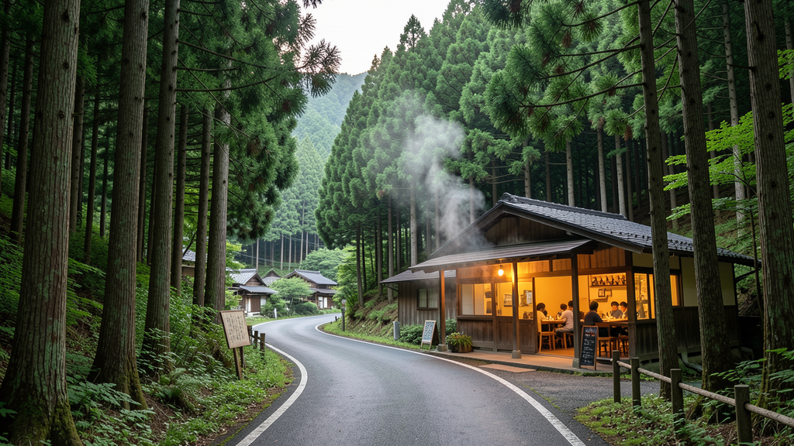

濃厚味噌の存在感。
味噌の香り、太めの麺、肉の旨み。写真と短い言葉で、来店前から「この一杯を食べに行きたい」と感じられる見せ方に。
特製味噌ラーメンチャーシュー小菅村ドライブ
山梨県小菅村の自然に囲まれた立地だからこそ、到着までの道のりも特別な体験に。濃厚味噌、香ばしいチャーシュー、旅先で見つける一杯の高揚感を、スマホで見やすくまとめます。
味噌の香り、太めの麺、肉の旨み。写真と短い言葉で、来店前から「この一杯を食べに行きたい」と感じられる見せ方に。
営業時間、駐車場、支払い、最新SNSへの導線を近い場所に置き、出発前の確認をスムーズにします。
日々の投稿や臨時情報は公式SNSへ。店舗ページから自然に最新情報へ進める構成です。
奥多摩・大月方面からのドライブ客にも、場所と楽しみ方が伝わる案内に整えます。
山あいの人気店は「行く前の確認」が大切。所在地、営業時間、駐車場、最新SNSを一つの画面にまとめます。

KOSUGE VILLAGE営業時間や並び方は変わることがあります。公式SNSの最新投稿を確認してから向かう導線を、目立つ位置に置きます。